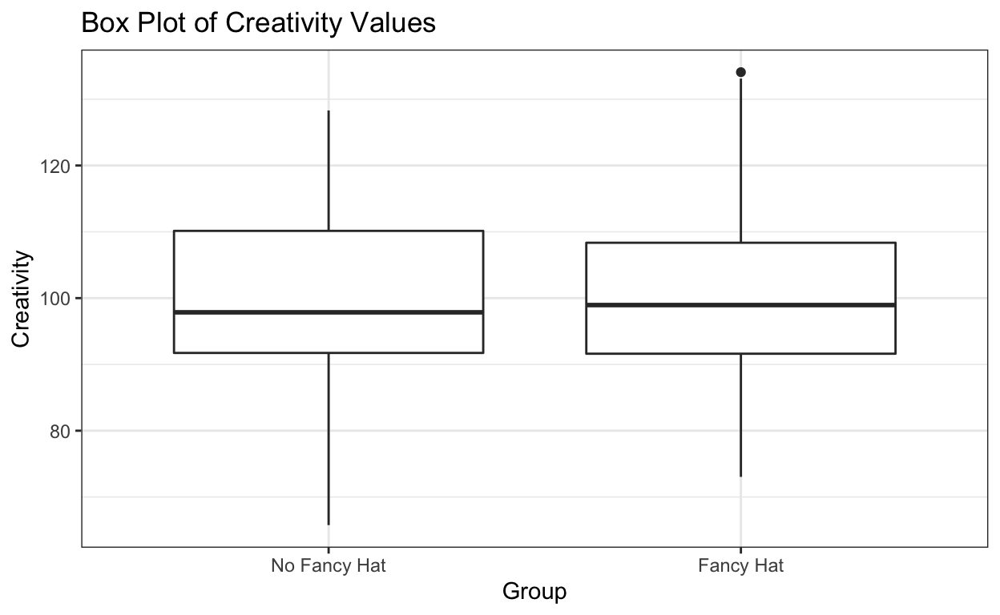
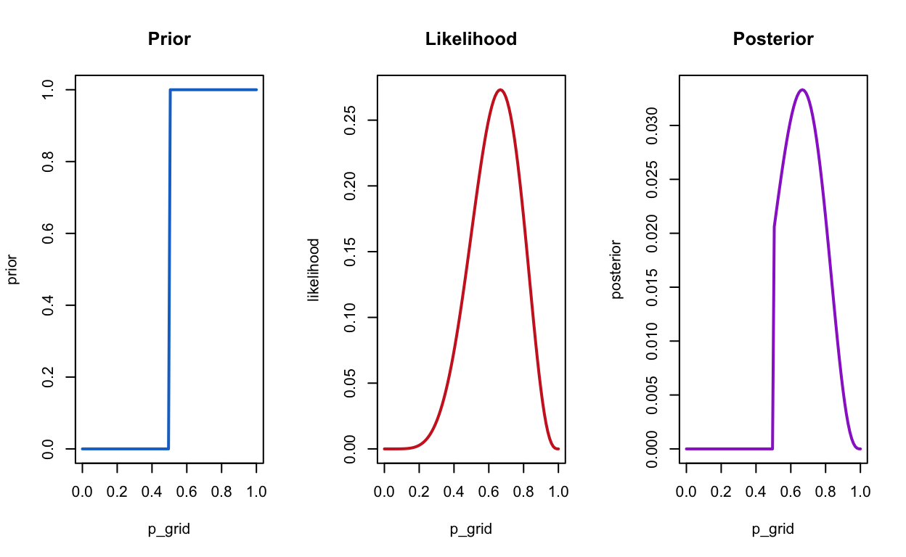
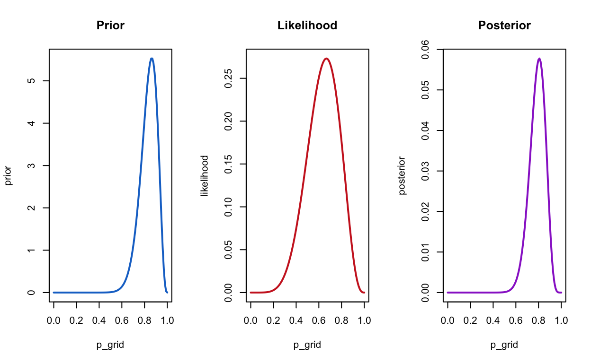
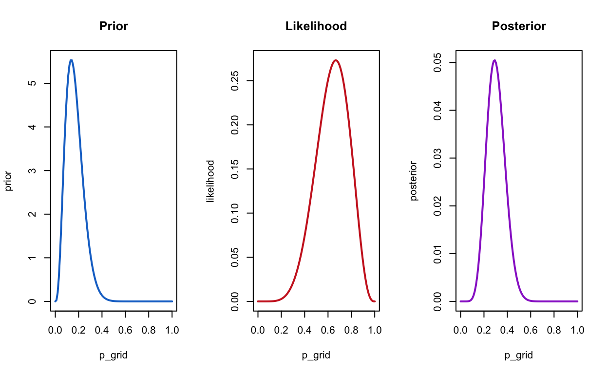
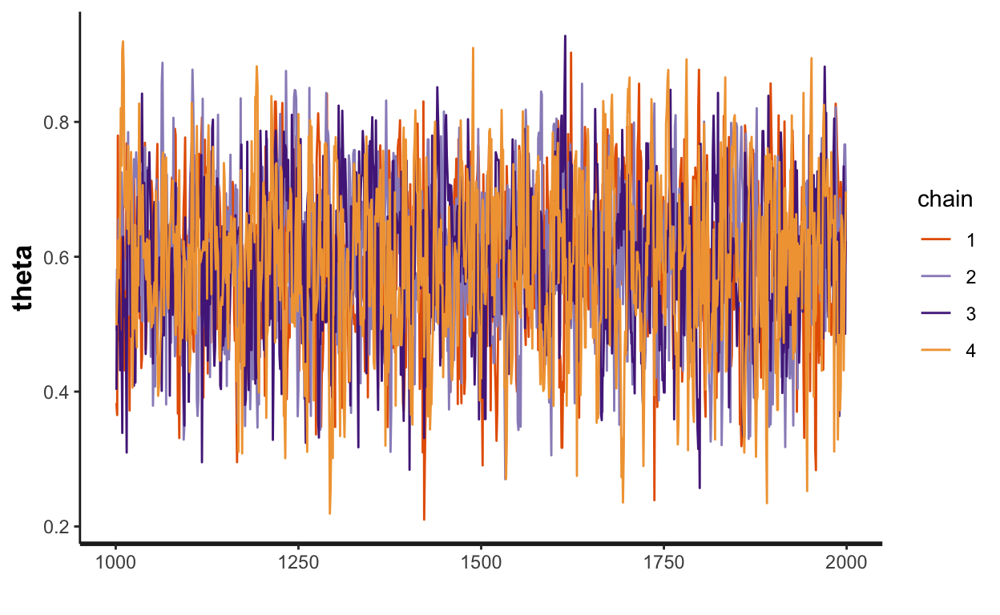
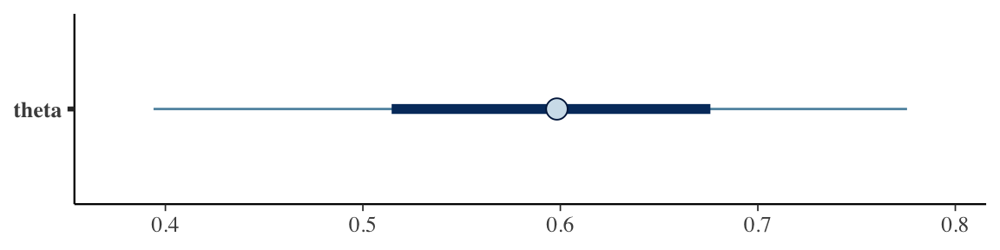
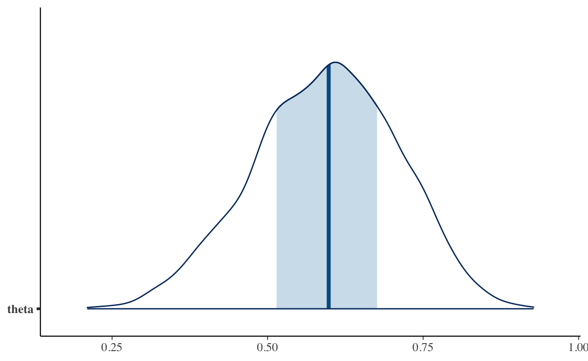
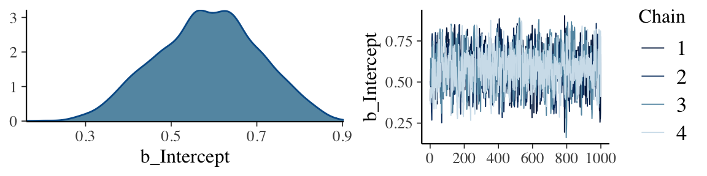
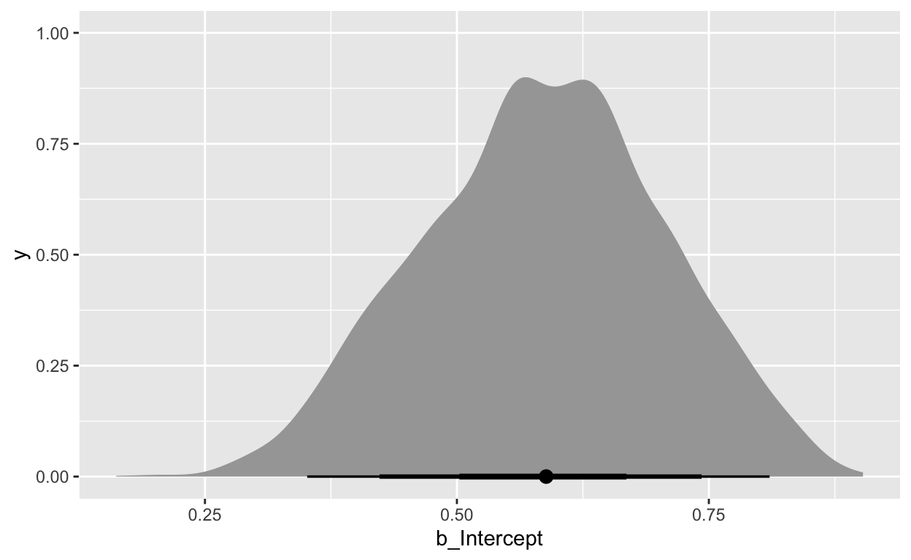

Klassische (frequentistische) und Bayesianische Statistik
Im Verlauf Ihres bisherigen Studiums haben Sie verschiedene statistische Methode kennengelernt, die alle etwas mit Null Hypothesis Significance Testing (NHST) zu haben. Diese Verfahren haben gemeinsam, dass sie
Diese Methoden stehen schon seit längerem in der Kritik:
Gigerenzer (2004);Gigerenzer (2018) behauptet unter anderem, dass die Verwendung von NHST Methoden oftmals einem statistischen Ritual gleichkommt.
Wasserstein and Lazar (2016) schreiben im Statement on Statistical Significance and P-Values der American Statistical Association:
Es scheint also grosse Probleme mit dem Verständnis von Konzepten der klassischen Statistik zu geben. Zum Beispiel werden Grundlegende Konzepte wie p-Werte und Konfidenzintervalle oft falsch verstanden (Hoekstra et al. 2014).
Schauen wir uns das Beispiel der letzten Sitzung nochmals an. Wir haben einen Datensatz generiert, um zwei geschätzte Mittelwerte zu vergleichen, mit dem Ziel herauszufinden, ob eine Gruppe einen grösseren Mittelwert als die andere hat.
library(tidyverse)
library(kableExtra)
set.seed(12)
# Number of people wearing fancy hats
N_fancyhats <- 50
# Number of people not wearing fancy hats
N_nofancyhats <- 50
# Population mean of creativity for people wearing fancy hats
mu_fancyhats <- 103
# Population mean of creativity for people wearing no fancy hats
mu_nofancyhats <- 98
# Average population standard deviation of both groups
sigma <- 15
# Generate data
fancyhats = tibble(Creativity = rnorm(N_fancyhats, mu_fancyhats, sigma),
Group = "Fancy Hat")
nofancyhats = tibble(Creativity = rnorm(N_nofancyhats, mu_nofancyhats, sigma),
Group = "No Fancy Hat")
FancyHat <- bind_rows(fancyhats, nofancyhats) %>%
mutate(Group = fct_relevel(as.factor(Group), "No Fancy Hat"))
Die Daten sehen so aus:
kbl(FancyHat) %>%
kable_paper() %>%
scroll_box(width = "500px", height = "200px")
| Creativity | Group |
|---|---|
| 80.79149 | Fancy Hat |
| 126.65754 | Fancy Hat |
| 88.64883 | Fancy Hat |
| 89.19992 | Fancy Hat |
| 73.03537 | Fancy Hat |
| 98.91556 | Fancy Hat |
| 98.26977 | Fancy Hat |
| 93.57617 | Fancy Hat |
| 101.40304 | Fancy Hat |
| 109.42022 | Fancy Hat |
| 91.33421 | Fancy Hat |
| 83.59177 | Fancy Hat |
| 91.30650 | Fancy Hat |
| 103.17928 | Fancy Hat |
| 100.71376 | Fancy Hat |
| 92.44804 | Fancy Hat |
| 120.83319 | Fancy Hat |
| 108.10768 | Fancy Hat |
| 110.60452 | Fancy Hat |
| 98.60042 | Fancy Hat |
| 106.35462 | Fancy Hat |
| 133.10802 | Fancy Hat |
| 118.17969 | Fancy Hat |
| 98.46311 | Fancy Hat |
| 87.62133 | Fancy Hat |
| 98.98923 | Fancy Hat |
| 100.01342 | Fancy Hat |
| 104.96684 | Fancy Hat |
| 105.18700 | Fancy Hat |
| 108.43097 | Fancy Hat |
| 113.10972 | Fancy Hat |
| 134.08054 | Fancy Hat |
| 94.88457 | Fancy Hat |
| 86.94262 | Fancy Hat |
| 97.41315 | Fancy Hat |
| 95.72288 | Fancy Hat |
| 107.12176 | Fancy Hat |
| 95.80731 | Fancy Hat |
| 114.97158 | Fancy Hat |
| 87.93323 | Fancy Hat |
| 104.57476 | Fancy Hat |
| 85.66011 | Fancy Hat |
| 111.67202 | Fancy Hat |
| 79.06562 | Fancy Hat |
| 98.37245 | Fancy Hat |
| 109.74199 | Fancy Hat |
| 88.34420 | Fancy Hat |
| 105.84997 | Fancy Hat |
| 113.97180 | Fancy Hat |
| 95.61101 | Fancy Hat |
| 97.35973 | No Fancy Hat |
| 96.30994 | No Fancy Hat |
| 104.85241 | No Fancy Hat |
| 128.30502 | No Fancy Hat |
| 82.23665 | No Fancy Hat |
| 109.01978 | No Fancy Hat |
| 106.08875 | No Fancy Hat |
| 78.28591 | No Fancy Hat |
| 94.24942 | No Fancy Hat |
| 102.71307 | No Fancy Hat |
| 104.09820 | No Fancy Hat |
| 112.91631 | No Fancy Hat |
| 110.83653 | No Fancy Hat |
| 100.95693 | No Fancy Hat |
| 110.51488 | No Fancy Hat |
| 110.70185 | No Fancy Hat |
| 127.31158 | No Fancy Hat |
| 65.76110 | No Fancy Hat |
| 112.56680 | No Fancy Hat |
| 115.17592 | No Fancy Hat |
| 90.11899 | No Fancy Hat |
| 101.75480 | No Fancy Hat |
| 91.55890 | No Fancy Hat |
| 95.26221 | No Fancy Hat |
| 96.45034 | No Fancy Hat |
| 88.49243 | No Fancy Hat |
| 78.93419 | No Fancy Hat |
| 92.24074 | No Fancy Hat |
| 105.75134 | No Fancy Hat |
| 95.33047 | No Fancy Hat |
| 98.06387 | No Fancy Hat |
| 78.88911 | No Fancy Hat |
| 94.96834 | No Fancy Hat |
| 115.46699 | No Fancy Hat |
| 97.64931 | No Fancy Hat |
| 111.45735 | No Fancy Hat |
| 95.34913 | No Fancy Hat |
| 114.70564 | No Fancy Hat |
| 89.87167 | No Fancy Hat |
| 83.54903 | No Fancy Hat |
| 103.64673 | No Fancy Hat |
| 83.22989 | No Fancy Hat |
| 111.46339 | No Fancy Hat |
| 99.93894 | No Fancy Hat |
| 113.50554 | No Fancy Hat |
| 92.86566 | No Fancy Hat |
| 104.78422 | No Fancy Hat |
| 87.57893 | No Fancy Hat |
| 94.41480 | No Fancy Hat |
| 82.89052 | No Fancy Hat |
Und grafisch dargestellt (als Boxplot):
# plot both groups
FancyHat %>%
ggplot() +
geom_boxplot ((aes(y = Creativity, x = Group))) +
labs(title= "Box Plot of Creativity Values") +
theme_bw()

Unter der Annahme, dass die beiden Gruppen dieselbe Standardabweichung haben, machen wir einen t-Test:
fancyhat_ttest <- t.test(Creativity ~ Group,
var.equal = TRUE,
data = FancyHat)
fancyhat_ttest_tab <- broom::tidy(fancyhat_ttest)
fancyhat_ttest_tab %>%
select(estimate, estimate1, estimate2, statistic, p.value, conf.low, conf.high) %>%
round(3) %>%
kbl() %>%
kable_classic(full_width = FALSE, html_font = "Cambria")
| estimate | estimate1 | estimate2 | statistic | p.value | conf.low | conf.high |
|---|---|---|---|---|---|---|
| -1.647 | 99.209 | 100.856 | -0.637 | 0.526 | -6.78 | 3.486 |
Es ist vielleicht nicht ganz offensichtlich, dass wir hier mehrere Dinge gemacht haben:
Wir haben zwei Mittelwerte geschätzt. Genauer gesagt haben wir zwei Punktschätzungen der Gruppenmittelwerte1.
Wir schätzen die resultierende Differenz der Gruppenmittelwerte2.
Wir berechnen eine Teststatistik (empirischer t-Wert)3.
Wir berechnen die Wahrscheinlichkeit, unter der Nullhypothese einen t-Wert zu erhalten, der einen mindestens so grossen Betrag hat wie der empirische t-Wert4.
Diskutieren Sie die Bedeutung des erhalten p-Wertes und des Konfidenzintervalles. Finden Sie diese Konzepte intuitiv verständlich? Können Sie erklären, was ein Konfidenzintervall ist?
Der p-Wert beträgt 0.53. Was können wir damit anfangen?
Es gibt viele weitere Probleme mit dem frequentistischen Ansatz (Wagenmakers 2007)—die oben genannten haben damit zu tun, dass die Konzepte nicht sonderlich intuitiv sind. Wir hätten z.B. gerne die Wahrscheinlichkeit, mit der eine Hypothese wahr/falsch ist.
Ein weiteres Problem ist, dass Anreize in der Forschung oftmals dazu verleiten, frequentistische NHST falsch einzusetzen. Verschiedene bad practices sind unter dem Begriff p-hacking bekannt. Damit kann z.B. gemeint sein, viele Hypothesentests durchzuführen, aber nur diejenigen zu Berichten, welche ein signifikantes Resultat ergeben.
Schlussendlich ist auch so, dass frequentistische Statistik nicht den von den Axiomen der Wahrscheinlichkeitstheorie Gebrauch macht, um Parameter zu schätzen, und die Unsicherheit bei der Schätzung nicht anhand einer Wahrscheinlichkeitsverteilung quantifiziert.
In der klassischen Statistik wird Wahrscheinlichkeit als relative Häufigkeits eines Ereignisses verstanden. Dies bedeutet, dass nur Ereignisse, welche (unendlich) oft wiederholt werden können, eine Wahrscheinlichkeit haben können.
Somit ist es unmöglich, dass Parameter oder Hypothesen eine Wahrscheinlichkeitsverteilung haben können. Zum Vergleich von frequentistischer und Bayesianischer Auffassung von Wahrscheinlichkeiten gibt es hier und hier mehr Information.
Wir werden nun mit einem anderen Ansatz arbeiten. Dieser beruht auf den Axiomen der Wahrscheinlichkeitstheorie und der Auffassung von Wahrscheinlichkeit als degree of belief, also vom der Grad persönlichen Überzeugung. Daher wird dieser Ansatz of subjektiv genannt.
Die wichtigste Erkenntnis ist jedenfalls: Wahrscheinlichkeitsverteilungen quantifizieren unseren Wissensstand, oder genauer gesagt, unsere Unsicherheit (uncertainty) über etwas. Dies kann eine Aussage sein, wie z.B. “es wird morgen regnen,” oder ein Parameter in einem statistischen Modell, oder eine Hypothese.
Die in 1 abgebildeten Verteilungen zeigen unsere Unsicherheit über eine Variable \(x\). Wir wissen, dass \(x>0\), und wir vermuten, dass \(x<50\). In einem Fall (violette Verteilung) glauben wir sogar mit einiger Sicherheit, dass \(x<10\).
library(tidyverse)
tibble(x = seq(from = 0, to = 60, by = .1)) %>%
tidyr::expand(x, nesting(alpha = c(2, 4),
beta = c(0.1, 1))) %>%
mutate(density = dgamma(x, alpha, beta),
group = rep(letters[1:2], times = n() / 2)) %>%
ggplot(aes(x = x, ymin = 0, ymax = density,
group = group, fill = group)) +
geom_ribbon(size = 0, alpha = 3/4) +
scale_fill_viridis_d(option = "B", direction = -1,
begin = 1/3, end = 2/3) +
scale_x_continuous(expand = expansion(mult = c(0, 0.05))) +
scale_y_continuous(NULL, breaks = NULL) +
coord_cartesian(xlim = c(0, 50)) +
theme(panel.grid = element_blank(),
legend.position = "none")
Figure 1: Wahrscheinlichkeitsverteilungen
In der Bayesianischen Statistik erhalten wir anstatt Punktschätzungen von Parametern ganze Verteilungen, mit denen wir unsere Unsicherheit quantifizieren. Ganz stark vereinfacht brauchen wir in der Bayesianischen Statistik eine Prior-Verteilung Englisch: prior), und wir erhalten eine Posteriori-Verteilung (Englisch: posterior), nachdem wir unseren prior anhand der Daten (likelihood) angepasst haben.
Unser prior gibt an, was wir glauben, bevor wir die Daten berücksichtigen, und unser posterior gibt an, was wir glauben, nachdem wir die Daten gesehen haben.
Bayesianische Statistik erfordert also ein paar neue Konzepte, aber längerfristig ist dieser Ansatz einfacher, denn es beruht alles auf ein paar wenigen Grundsätzen.
Die Vorteile des Bayesianischen Ansatzes sind:
intuitiveres Verständnis von Unsicherheit.
erlaubt es uns Evidenz für oder gegen Hypothesen zu quantifizieren.
dieser Ansatz ist viel flexibler.
Wir können unser Wissen in Form von a priori-Verteilungen miteinbeziehen.
besser geeignet für Multilevel Modelle.
Bayesianische Statistik hat aber auch Nachteile:
wir brauchen leistungsstarke Computer.
setzt Familiarität mit Wahrscheinlichkeitsverteilungen voraus.
es ist nicht einfach, Hypothesentests durchzuführen. Siehe z.B. hier und hier.
Warum brauchen wir viel Rechenpower, um Bayesianische Statistik zu machen?
Dies hat damit zu tun, dass es nur in ganz wenigen Fällen einfach ist, posterior Verteilungen zu erhalten. In wenigen Fällen ist es möglich, diese analytisch zu bestimmen, in den den meisten Fällen brauchen wir simulationsbasierte Sampling-Verfahren (Markov Chain Monte Carlo Sampling), um die komplexen Wahrscheinlichkeitsverteilungen zu schätzen. Dies erfordert sehr schnelle Prozessoren, und war deshalb in der Vergangenheit nur auf Supercomputern möglich.
Wir werden nun anhand zweier einfacher Beispiele die Bayesianische Parameterschätzung kennenlernen. Danach werden wir komplexere Beispiele betrachten, und Methoden kennenlernen, mit denen wir Hypothesen testen können. Hypothesentests sind eine Form von Modellvergleichen, und hier gibt es mehrere Möglichkeit.
Parameter sind Zufallsvariablen. Im Gegensatz dazu können Parameter im frequentistischen Ansatz keine Verteilung haben.
Parameter kommen aus Wahrscheinlichkeitsverteilung, welche unser Wissen (Unsicherheit) repräsentieren
Die Prior-Verteilung wird anhand der Likelihood (Daten) updated, um ein Posterior-Verteilung zu erhalten.
Im Prinzip folgt Bayesianische Datenanalyse immer den folgenden drei Schritten:
Wir schreiben ein Wahrscheinlichkeitsmodell auf, bestehen aus einer gemeinsamen Verteilung der beobachtent Variablen (\(y\), \(x\)) und der latenten Parameter \(\theta\)).
Wir berechnen die Posterior-Verteilung \(P(θ | y) \sim P(y | \theta) \cdot p(\theta)\), beruhend auf den beobachteten Daten.
Wir evaluieren das Modell und die Posterior-Verteilung.
Wir schauen uns nun diesen Prozess anhand eines simplen Beispiels an.
Zwei Kartenspieler spielen gegeneinander. Sie beobachten, dass Spielerin A 6 von 9 Spielen gewinnt, während Spielerin B nur 3 davon gewinnt. Sie fragen sich nun, ob das nur Glück ist, oder ob Spielerin A tatsächlich besser sein könnte.
Dieses Beispiel ist analytisch lösbar. Ich werde die analytische Lösung in einem Blog Post demonstrieren, da wir hier eine simulationsbasierte Lösung anstreben.
Wenn Sie diesen Sachverhalt quantifizieren möchten, könnten Sie behaupten, dass die Wahrscheinlichkeit, dass Spielerin A gewinnt, grösser als 0.5 sein müsste, falls diese besser ist. Eine Wahrscheinlichkeit von 0.5 würde bedeuten, dass beide mit gleicher Wahrscheinlichkeit gewinnen.
Unser Ziel ist es also, den Wahrscheinlichkeitsparameter \(\theta\) einer Binomialverteilung zu schätzen. Die Daten, \(y\), sind in diesem Fall die 6 Erfolge in 9 Versuchen.
wins <- 6
games <- 9
Wir wissen, dass die Anzahl Erfolge in k Spielen einer Binomialverteilung folgt. Falls beide Spielerinnen gleich gut sind, sollte die Erfolgswahrscheinlichkeit ungefähr 0.5 sein. Wir können die Wahrscheinlichkeit berechnen, dass Spielerin A durch Glück 6 Spiele gewinnt, d.h. unter der Annahme, dass beide gleich gut sind.
dbinom(x = wins, size = games, prob = 0.5)
[1] 0.1640625Diese Wahrscheinlichkeit ist ziemlich hoch. Wir können auch die kumulative Wahrscheinlichkeit berechnen, 5 mal oder weniger zu gewinnen:
pbinom(q = 5, size = games, prob = 0.5)
[1] 0.7460937Die Wahrscheinlichkeit, 6, 7, 8 oder 9 mal zu gewinnen wäre demnach:
1 - pbinom(q = 5, size = games, prob = 0.5)
[1] 0.2539063oder
pbinom(q = 5, size = games, prob = 0.5, lower.tail = FALSE)
[1] 0.2539063Wir können aber auch eine Punktschätzung der Wahrscheinlichkeit erhalten.
theta <- wins/games
theta
[1] 0.6666667Dies entspricht derjenigen Schätzung, für welche die Wahrscheinlichkeit maximiert wird, diese Daten zu beobachten. Dies nennt man eine Maximum Likelihood Schätzung.
tibble(x = seq(from = 0, to = 1, by = .01)) %>%
mutate(density = dbinom(6, 9, x)) %>%
ggplot(aes(x = x, ymin = 0, ymax = density)) +
geom_ribbon(size = 0, alpha = 1/4, fill = "steelblue") +
geom_vline(xintercept = theta, linetype = 2, size = 1.2) +
scale_y_continuous(NULL, breaks = NULL) +
coord_cartesian(xlim = c(0, 1)) +
xlab("Wahrscheinlichkeit") +
theme(panel.grid = element_blank(),
legend.position = "none")
Figure 2: Maximum-Likelihood Schätzung
Grafik 2 zeigt, dass \(\theta\) = 6/9 derjenige Parameter ist, für den die Wahrscheinlichkeit maximiert wird, dass wir 6 Erfolge in 9 Spielen beobachten.
Mit einer Punktschätzung können wir unsere Unsicherheit aber nicht quantifizieren—dafür brauchen wir eine Verteilung über den ganzen Bereich der möglichen Parameterwerte. Diese Verteilung erhalten wir, indem wir das Bayes’sche Theorem anwenden. Die Wahrscheinlichkeit, dass A gewinnt, \(\theta\), bedingt auf die Daten, ist:
\[ P(\theta|Data) = \frac{ P(Data|\theta) * P(\theta) } {P(Data)}\] Der Term \(P(Data)\) ist eingentlich nur eine Normalisierungskonstante, welche dafür sorgt, dass wir eine Verteilung erhalten (welche zu 1 integriert), und wird oft weggelassen:
\[ P(\theta|Data) \propto P(Data|\theta) * P(\theta) \] Um dies zu berechnen, brauchen wir \(P(Data|\theta)\) und \(P(\theta)\). \(P(Data|\theta)\) ist einfach; die Wahrscheinlichkeit \(k\) Erfolge in \(n\) Versuchen zu erhalten ist
\[ P(x = k) = {n \choose k} \theta^k (1-\theta)^{n-k} \] Das bedeutet: \(k\) Erfolge mit Wahrscheinlichkeit \(\theta^k\) und \(n-k\) Misserfolge mit Wahrscheinlichkeit \(1-\theta^{n-k}\). Mit dem Term \(\binom{n}{k} = \frac{n!}{k!(n-k)!}\) berücksichtigen wir alle Reihenfolgen, mit denen wir 6 Erfolge in 9 Spielen erhalten.
\(P(\theta)\) ist die a-priori-Wahrscheinlichkeit, mit der Spielerin A gewinnt. Wenn wir nicht über die beiden Spielerinnen wissen, ist es sinnvoll anzunehmen, dass alle Wahrscheinlichkeiten zwischen 0 und 1 gleichwahrscheinlich sind. So eine Verteilung nennt man eine uniforme Verteilung über dem Interval \(\left(0, 1\right) = \{x \in \mathbb{R} | 0 < x < 1 \}\).
Wir definieren nun einen Vektor von möglichen Werten:
n_points <- 100
p_grid <- seq( from=0 , to=1 , length.out = n_points )
Die Likelihood, das heisst die Wahrscheinlichkeit der Daten für jeden möglichen Parameterwert, ist
likelihood <- dbinom(wins , size = games , prob = p_grid)
compute_posterior = function(likelihood, prior){
# compute product of likelihood and prior
unstandardized_posterior <- likelihood * prior
# standardize the posterior, so it sums to 1
posterior <- unstandardized_posterior / sum(unstandardized_posterior)
par(mfrow=c(1, 3))
plot(p_grid , prior, type="l", main="Prior", col = "dodgerblue3", lwd = 2)
plot(p_grid , likelihood, type="l", main="Likelihood", col = "firebrick3", lwd = 2)
plot(p_grid , posterior , type="l", main="Posterior", col = "darkorchid3", lwd = 2)
}
Da wir jeden Wert für gleich wahrscheinlich hielten, hat unser Prior keinen Einfluss auf den Posterior.
Wir können aber unser Vorwissen auch anders ausdrücken. Vielleicht halten wir es für möglich, dass A besser ist als B, aber wir glauben, es sei unmöglich, dass B besser ist. Dieser Glaube könnte durch folgenden Prior repräsentiert werden.
prior2 <- ifelse(p_grid < 0.5, 0, 1)
compute_posterior(likelihood, prior2)

Dies führt dazu, dass in unserem Posterior Werte \(< 0.5\) nicht möglich sind, weil wir dieses Vorwissen in unserem Prior spezifiziert hatten.
Wir können aber auch abenteuerliche Priors benutzen, wie z.B. folgender: Wir glauben, dass \(0.5\) der wahrscheinlichste Wert ist, mit einem exponentiellen Abfall auf beide Seiten.
Da wir aber nicht immer unsere Prior Verteilungen per Hand spezifieren können oder wollen, ist es oft ratsam, eine bekannte Wahrscheinlichkeitsverteilung zu benutzen. Diese muss einen Wertebereich haben, der für den zu schätzenden Parameter angemessen ist. In diesem Fall ist dies das Interval \(\left(0, 1\right)\).
Die Familie von Verteilungen, die hier in Frage kommen, sind die Beta-Verteilungen. Diese haben zwei Parameter, \(\alpha\) und \(\beta\), welche als Vorwissen über Erfolge und Misserfolge interpretiert werden können. Die Anzahl Versuche ist somit \(\alpha + \beta\). Diese Familie von Verteilungen kann je Nach Wahl der beiden Parameter unterschiedliche Formen annehmen. In Grafik 3 sind einige dargestellt.
d %>%
ggplot(aes(x = x, group = group)) +
geom_line(aes(y = dbeta(x, shape1 = shape1, shape2 = shape2)),
color = "steelblue4", size = 1.1) +
scale_x_continuous(expression(theta), breaks = c(0, .5, 1)) +
coord_cartesian(ylim = c(0, 3)) +
labs(title = "Beispiele von Beta Verteilungen",
y = expression(p(theta*"|"*a*", "*b))) +
theme(panel.grid = element_blank()) +
facet_grid(b~a)
Figure 3: Beta Verteilungen
Die uniforme Verteilung erhalten wir, wenn wir \(\alpha = \beta = 1\) setzen. Wenn wir \(\alpha = \beta = 4\) setzen, erhalten wir eine Verteilung mit Erwartungswert \(0.5\)—dies ist der Fall für alle Verteilungen in denen die beiden Parameter denselben Wert annehmen. Wenn wir ausdrücken wollen, dass wir A für die bessere Spielerin als B halten, dann wählen wir \(\alpha > \beta\).
Die Verteilungsfunktionen heissen in R dbeta(), pbeta(), qbeta() und rbeta(). Die Parameter \(\alpha\) und \(\beta\) heissen ganz einfach shape1 und shape2.
prior4 <- dbeta(x = p_grid, shape1 = 20, shape2 = 4)
compute_posterior(likelihood, prior4)

Wenn wir überzeugt wären, dass B besser ist, dann hätten wir vielleicht diesen Prior:
prior5 <- dbeta(x = p_grid, shape1 = 4, shape2 = 20)
compute_posterior(likelihood, prior5)

Die obigen Beispiele illustrieren, dass die Prior-Verteilung einen grossen Einfluss auf die Schätzung haben kann. Deshalb ist bei der Wahl der Prior Vorsichtig geboten; vor allem wenn es darum geht, Parameter in statistischen Modellen zu schätzen, wollen wir oft sogenannte non-informative Priors, welche keine nennenswerten Einfluss auf die Schätzung haben.
Die Methode, welche wir oben angewandt haben, nennt sich “grid approximation.” Dies bezieht sich auf den Prior—wir haben einen Vektor von Priorwerten definiert, und jeden Punkt mit der Likelihood multipliziert, in direkter Anwendung von Bayes’ Theorem. Dies ist für dieses kleine Problem sehr gut möglich. Daneben gibt es für dieses Beispiel auch die analytische Lösung. Die Beta-Prior-Verteilung kann mit den beobachteten Erfolgen und Versuchen updated werden, um eine neue Beta-Verteilung mit den Parametern \(k + \alpha\) und \(n - k + \beta\).
Nun kommen diese beiden Ansatz für die meisten Datenanalyseprobleme nicht in Frage. Die analytische Lösung ist nicht möglich, und die grid-search Methode ist nicht in endlicher Zeit durchführbar. In diesem Fall sind wir auf approximative Methoden angewiesen. Eine Variante, welche die Posterior-Verteilung durch Ziehen von Zufallszahlen exploriert, heisst Markov CHain Monte Carlo. Davon gibt es wiederum verschiedene Varianten.
Ein Algorithmus, welcher als state-of-the-art gilt, heisst Hamiltonian Monte Carlo, und eine spezielle Variante davon heisst NUTS (No-U-Turn Sampler). Auf diese Inferenzmethode ist die probabilistische Programmiersprache Stan spezialisiert.
Wir werden in dieser Veranstaltung selten Stan direkt verwenden, da es mittlerweile gute R Packages gibt, mit denen die Bedienung von Stan sehr einfach geworden ist. Ich halte es jedoch für pädagogisch wertvoll, wenn wir uns zumindest dieses Beta-Binomial Besipiel in Stan anschauen.
Die Vorgehensweise ist genauso, wie oben beschrieben: wir schreiben zuerst ein probabilistischen Model5 auf, und bedingen dann auf die beobachteten Daten.
Das Modell wird in der Stan Sprache geschrieben. Wir verwenden hier einen Beta(4, 4) Prior.
data {
int<lower=0> n; // number of games
int<lower=0> k; // number of wins
}
parameters {
real<lower=0, upper=1> theta;
}
model {
theta ~ beta(4, 4);
k ~ binomial(n, theta);
}Dieser Code wird in einem File mit dem Suffix .stan gespeichert.
Wir laden das Package rstan, das R Interface zu Stan.
Dann definieren wir die beobachteten Daten:
stan_data <- list(
n = 9,
k = 6
)
Und benutzen die Funktion stan(), um die Posterior-Verteilung zu sampeln.
fit <- stan(file = "binomial-model.stan", # Stan program
data = stan_data, # named list of data
chains = 4, # number of Markov chains
iter = 2000, # total number of iterations per chain
cores = 4) # number of cores (could use one per chain)
print(fit)
Inference for Stan model: binomial-model.
4 chains, each with iter=2000; warmup=1000; thin=1;
post-warmup draws per chain=1000, total post-warmup draws=4000.
mean se_mean sd 2.5% 25% 50% 75% 97.5% n_eff
theta 0.59 0.00 0.12 0.36 0.51 0.60 0.68 0.80 1497
lp__ -12.04 0.02 0.74 -14.11 -12.22 -11.75 -11.57 -11.52 1976
Rhat
theta 1
lp__ 1
Samples were drawn using NUTS(diag_e) at Sat Mar 13 01:36:41 2021.
For each parameter, n_eff is a crude measure of effective sample size,
and Rhat is the potential scale reduction factor on split chains (at
convergence, Rhat=1).traceplot(fit)

bayesplot::mcmc_intervals(fit, "theta")

bayesplot::mcmc_areas(fit, "theta")

data <- tibble(k = 6, n = 9)
plot(m1)

Wir erhalten mit Bayesianischer Inferenz zwar Posterior-Verteilungen, aber oftmals wollen wir diese zusammen, damit wir eine Entscheidung fällen können.
Dies wird häufig anhand bestimmter Kennzahlen gemacht. Z.B. können wir den Mittelwert oder Median und eine Ober- und Untergrenze wählen. Ein solches Interval wird credible interval genannt. Häufig wird ein \(95\%\) credible interval angegeben, aber es hindert uns nichts daran, ein \(50\%\) oder \(80\%\) credible interval zu benutzen. Mit der median_qi() vom Package tidybayes können wir das .width Argument benutzen:
m1 %>%
spread_draws(b_Intercept) %>%
median_qi(.width = c(.50, .80, .95)) %>%
kableExtra::kbl()
| b_Intercept | .lower | .upper | .width | .point | .interval |
|---|---|---|---|---|---|
| 0.5885875 | 0.5025237 | 0.6682483 | 0.50 | median | qi |
| 0.5885875 | 0.4231849 | 0.7428155 | 0.80 | median | qi |
| 0.5885875 | 0.3514341 | 0.8102628 | 0.95 | median | qi |
Mit mean_qi() erhalten wir Mittelwert und credible intervals.
Um die Posterior-Verteilung zu visualisieren, können wir die Verteilung mit einem credible interval kombinieren.
m1 %>%
spread_draws(b_Intercept) %>%
ggplot(aes(x = b_Intercept)) +
stat_halfeye(.width = c(.50, .80, .95))

Was ist der Unterschied zwischen einem Konfidenzintervall und einem credible interval? Welches Intervall würden Sie verwenden, um eine Wahrscheinlichkeitsaussage über einen Parameter zu machen?
Etz and Vandekerckhove (2018) bieten eine sehr gründliche Einführung, mit vielen (Harry Potter-themed) Beispielen. Schoot et al. (2014) ist ebenfalls eine sehr gründliche Einführung. Eine empfehlenswerte Übersicht über Literatur, vor allem in Bezug auf Psychologie, geben Etz et al. (2016).
Das Buch von (Kruschke 2015) ist ein gutes Lehrbuch, obwohl der R Code nicht unbedingt sehr benutzerfreundlich ist.
Mein Favorit ist McElreath (2020).
If you see mistakes or want to suggest changes, please create an issue on the source repository.
Text and figures are licensed under Creative Commons Attribution CC BY 4.0. Source code is available at https://github.com/kogpsy/neuroscicomplab, unless otherwise noted. The figures that have been reused from other sources don't fall under this license and can be recognized by a note in their caption: "Figure from ...".
For attribution, please cite this work as
Ellis (2021, June 22). neuroscicomplab: Einführung. Retrieved from https://kogpsy.github.io/neuroscicomplab/01-intro-bayesian-stats.html
BibTeX citation
@misc{ellis2021einführung,
author = {Ellis, Andrew},
title = {neuroscicomplab: Einführung},
url = {https://kogpsy.github.io/neuroscicomplab/01-intro-bayesian-stats.html},
year = {2021}
}